<meta charset="utf-8"><title>11/20のコラム note貼り付け</title>
<style>
/* one column of numbered paste steps; text steps vs image steps differ by marker */
:root{--bg:#F5F4F0;--card:#FFFFFF;--ink:#1D2321;--mute:#5F665F;--line:#DCDAD2;--btn:#1F5FBF;--btnok:#2E8B4F;--img:#E9F3EC;--imgink:#22663B;--sans:'IBM Plex Sans JP','Hiragino Sans','Noto Sans JP',sans-serif}
@media (prefers-color-scheme:dark){:root:not([data-theme="light"]){--bg:#171A19;--card:#202423;--ink:#ECEDE8;--mute:#A3AAA2;--line:#343937;--btn:#4D8BE6;--btnok:#3FA866;--img:#1E2C23;--imgink:#8FD3A6;color-scheme:dark}}
:root[data-theme="dark"]{--bg:#171A19;--card:#202423;--ink:#ECEDE8;--mute:#A3AAA2;--line:#343937;--btn:#4D8BE6;--btnok:#3FA866;--img:#1E2C23;--imgink:#8FD3A6;color-scheme:dark}
body{background:var(--bg);color:var(--ink);font-family:var(--sans);font-size:15px;line-height:1.75;padding:20px 16px 60px}
main{max-width:680px;margin:0 auto;display:grid;gap:28px}
header h1{font-size:22px;margin:0 0 6px;text-wrap:balance}
header p{margin:0;color:var(--mute);font-size:14px}
nav{display:flex;gap:8px;flex-wrap:wrap;margin-top:12px}
nav a{border:1px solid var(--line);border-radius:999px;padding:4px 14px;color:var(--ink);text-decoration:none;font-size:14px;background:var(--card)}
.part h2{font-size:18px;line-height:1.5;margin:0 0 12px;text-wrap:balance;display:flex;gap:10px;align-items:baseline;flex-wrap:wrap}
.tag{font-size:13px;background:var(--ink);color:var(--bg);border-radius:6px;padding:1px 9px}
.steps{list-style:none;margin:0;padding:0;display:grid;gap:12px}
.st{background:var(--card);border:1px solid var(--line);border-radius:12px;padding:12px;min-width:0}
.hd{display:flex;align-items:center;gap:8px;margin-bottom:8px}
.no{width:26px;height:26px;border-radius:50%;background:var(--btn);color:#fff;display:inline-flex;align-items:center;justify-content:center;font-size:13px;font-weight:700;flex:0 0 26px}
.im .no{background:var(--btnok)}
.hd em{font-style:normal;font-size:12px;background:var(--img);color:var(--imgink);border-radius:6px;padding:0 8px}
.bx{font-size:13.5px;line-height:1.7;border:1px solid var(--line);border-radius:8px;padding:8px 10px;max-height:110px;overflow:auto;overflow-wrap:anywhere}
.bx.tall{max-height:150px}.bx p{margin:0 0 6px}.bx h2{font-size:14px;margin:8px 0 4px}.bx a{color:var(--btn)}
.st img{display:block;width:100%;max-width:100%;border:1px solid var(--line);border-radius:8px}
.sub{font-size:12.5px;color:var(--mute);margin:6px 0 0}
.cp{width:100%;margin-top:8px;padding:12px;border:0;border-radius:10px;background:var(--btn);color:#fff;font:600 15px var(--sans);cursor:pointer}
.cp.ok{background:var(--btnok)}.cp.dl{background:var(--btnok)}.cp:focus-visible{outline:3px solid var(--ink);outline-offset:2px}
.xh{font-size:15px;margin:20px 0 10px}
.fb{font-size:13px;line-height:1.7;margin:8px 0 0;padding:8px 10px;border-radius:8px;background:var(--img);color:var(--imgink)}
.opts{display:grid;grid-template-columns:repeat(auto-fill,minmax(240px,1fr));gap:10px}
.opt{min-width:0}.opt img{display:block;width:100%;border:1px solid var(--line);border-radius:8px}
.ol{display:flex;align-items:center;gap:8px;margin-top:6px}.ol b{font-size:13px;flex:0 0 auto}.ol .on{font-size:12.5px;color:var(--mute);flex:1;min-width:0}.ol .cp{width:auto;flex:0 0 auto;padding:9px 14px}.ol .cp{margin:0;padding:9px}
.toast{font-size:13px;color:var(--mute);margin-top:6px}
</style>
<main><header><h1>11/20のコラム note貼り付け</h1><p>いま公開済みは8本です。青い番号は文章、緑は画像です。</p><nav><a href="#p1">1</a><a href="#p2">2</a><a href="#p3">3</a><a href="#p4">4</a><a href="#p5">5</a><a href="#p6">6</a><a href="#p7">7</a><a href="#p8">8</a></nav></header><section class="part" id="p1"><h2><span class="tag">OFF GRID</span>F1に専任スチュワード、2027年から　将来は12〜15人</h2><p class="sub">サイトに公開：10:24</p><ol class="steps">
<li class="st im"><div class="hd"><span class="no">1</span><b>見出し画像</b><em>画像</em></div>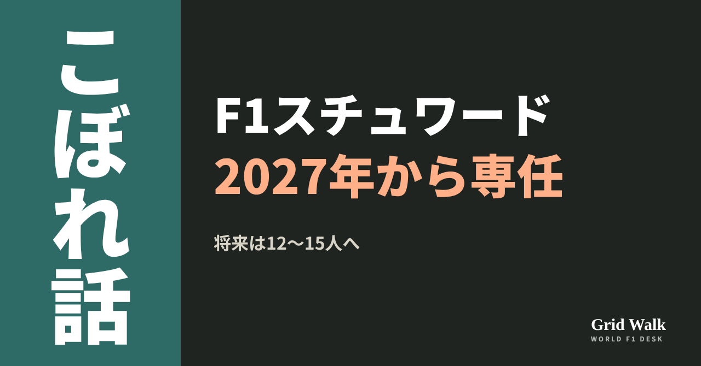<button class="cp dl" data-img="img/fia-fulltime-stewards-2027-20261120.png" data-name="fia-fulltime-stewards-2027-20261120_見出し画像.png">ダウンロード</button></li>
<li class="st"><div class="hd"><span class="no">2</span><b>タイトル</b></div><div class="bx" id="p1t">F1に専任スチュワード、2027年から　将来は12〜15人</div><button class="cp" data-plain="p1t">タイトルをコピー</button></li>
<li class="st"><div class="hd"><span class="no">3</span><b>本文</b></div><div class="bx tall" id="p1r"><p>ラスベガスGPの週に、FIAがレースの審判役、スチュワード（審査委員）の仕組みを変えると発表しました。2027年シーズンから、F1で初めて専任のスチュワードを使います。イギリスのThe Raceが11月19日に伝えました。</p><p>元の記事へのリンクと、スチュワードの仕組みの解説はサイトで → <a href="https://f1gridwalk.github.io/lens/fia-fulltime-stewards-2027-20261120/?utm_source=note&amp;utm_campaign=fia-fulltime-stewards-2027-20261120">https://f1gridwalk.github.io/lens/fia-fulltime-stewards-2027-20261120/?utm_source=note&amp;utm_campaign=fia-fulltime-stewards-2027-20261120</a></p><p>FIAのモハメド・ビン・スライエム会長は、こう話しています。</p><blockquote><p>「専任スチュワードの採用は、FIA F1世界選手権に専門の審判の体制を築くという長年の使命の中での大きな一歩であり、このスポーツの未来への投資でもある」（ビン・スライエム、The Race／イギリス）</p></blockquote><p>サイトの要約は https://f1gridwalk.github.io/news/en-therace-fulltime-stewards-2027/ にあります。</p><h2>いまは大会ごとに入れ替わる顔ぶれ</h2><p>The Raceによると、今のスチュワードは、大会ごとに大きな顔ぶれの中から持ち回りで選ばれています。FIAが選ぶ人、開催国の団体が推薦する人、そして元ドライバー1人という組み合わせです。スチュワードが何を決める役なのかはルールブック https://f1gridwalk.github.io/deep/rules/stewards/ で、元ドライバーの枠は https://f1gridwalk.github.io/deep/rules/driver-steward/ で読めます。</p><h2>まずは少人数、2028年に拡大</h2><p>The Raceによると、FIAは2027年にまず少ない人数を採り、2028年に規模を広げ、いずれは12〜15人の専任スチュワードをそろえる計画です。当面は、専任と非常勤のスチュワードを組み合わせて使うといいます。</p><p>FIAが挙げる狙いは、判定の一貫性と、審判の仕事への専念です。F1以外のFIAのシングルシーター選手権を受け持つ余力が生まれ、新しい傾向や、規則をはっきりさせるべきところに気づく力も増える、とFIAは説明しています。さらに専任の人は、審判員を育てるFIAのハイ・パフォーマンス・プログラムで、次の世代の指導役も務めます。</p><p>ビン・スライエム会長は、今年開いたFIAの遠隔管制センター（リモート・オペレーション・センター）にも触れて、こうも話しています。The Raceによると、FIAは2026年、イギリスのビギンヒルにあるF1の本拠に、離れた場所からレースを見守る拠点を設けました。</p><blockquote><p>「この取り組みは、スチュワードの体制の中に、より深い専門性と継続性を築く助けになる」（ビン・スライエム、The Race／イギリス）</p></blockquote><h2>ラッセルが2024年に求めた形</h2><p>専任のスチュワードは、ドライバーやチーム代表がこれまでも求めてきたものです。The Raceによると、2024年のアメリカGPでいくつもの出来事が起きたあと、メルセデスのジョージ・ラッセルはこう話していました。</p><blockquote><p>「一貫性を保つ唯一の方法は、毎回のレース週末に同じスチュワードがいることだ」「彼らはとても経験豊富だけど、ほとんどボランティアとしてここに来ている」（ラッセル、The Race／イギリス）</p></blockquote><p>常任にするか、持ち回りを続けるか。サインツや2025年のラッセルの声、FIA側の見方など、これまでの議論は DEEP GRID https://f1gridwalk.github.io/deep/who-decides-penalties/ にまとめています。</p><p>編集部としては、2027年は少人数で始まり、専任と非常勤が混ざるため、毎戦同じ顔ぶれがそろうというラッセルの求めた形に、すぐになるわけではないと見ています。誰をどう選ぶのか、1つの大会に専任の人が何人入るのかは、記事には出ていません。それでも、判定がたびたび話題になる今のF1で、審判を仕事として続ける人が増えることは、判定の説明のぶれを減らす方向に働きそうです。</p><p><strong>専任のスチュワードが増えれば、判定への不満は減ると思いますか？</strong></p><p>━━━━━━━━━━</p><p><strong>F1 Grid Walk では、世界のF1ニュースを毎日日本語でまとめています。</strong></p><p>海外の記事の要約を、毎日載せています。</p><p><a href="https://f1gridwalk.github.io/">https://f1gridwalk.github.io/</a></p><p>ほかの海外記事も読みたい方は、F1 Grid Walkへ。</p><p><a href="https://f1gridwalk.github.io/lens/fia-fulltime-stewards-2027-20261120/">https://f1gridwalk.github.io/lens/fia-fulltime-stewards-2027-20261120/</a></p><p>━━━━━━━━━━</p><p><a href="https://www.the-race.com/formula-1/f1-to-use-full-time-stewards-from-2027/">出典：The Race（イギリス）</a></p><p><a href="https://www.formula1.com/en/racing/2026">出典：F1公式サイト（イギリス）</a></p></div><button class="cp" data-rich="p1r">本文をコピー</button></li>
<li class="st"><div class="hd"><span class="no">4</span><b>ハッシュタグ</b></div><div class="bx" id="p1h">#F1 #F1jp #FIA #スチュワード #ラッセル #ビン・スライエム #ラスベガスGP #2027年 #F1こぼれ話 #OFFGRID</div><button class="cp" data-plain="p1h">タグをコピー</button></li>
</ol><h3 class="xh">X</h3><ol class="steps">
<li class="st im"><div class="hd"><b>X用の画像</b><em>画像</em></div>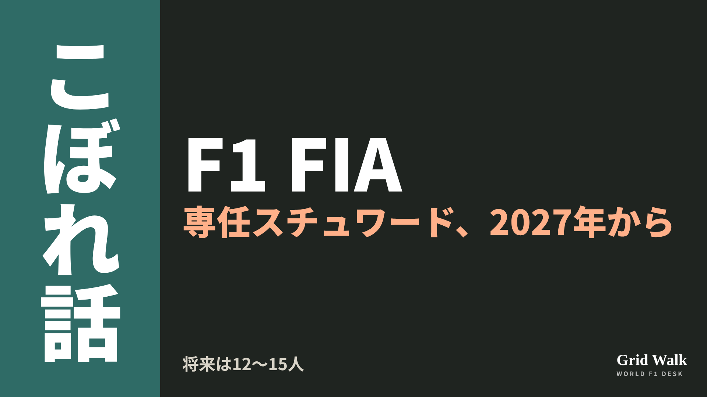<button class="cp dl" data-img="img/x_fia-fulltime-stewards-2027-20261120.png" data-name="x_fia-fulltime-stewards-2027-20261120.png">ダウンロード</button></li>
<li class="st"><div class="hd"><b>① noteをシェアするときの文</b></div><div class="bx" id="p1x0">FIAが、2027年からF1で初めて専任のスチュワード（審査委員）を使うと発表しました。まず少人数で始め、2028年に規模を広げて、いずれ12〜15人をそろえる計画です。noteにまとめました #F1jp #FIA</div><button class="cp" data-plain="p1x0">コピー</button></li>
<li class="st"><div class="hd"><b>② ①への返信</b></div><div class="bx" id="p1x1">ほかの海外記事も読みたい方は、F1 Grid Walkへ。
https://f1gridwalk.github.io/lens/fia-fulltime-stewards-2027-20261120/?utm_source=x&amp;utm_campaign=fia-fulltime-stewards-2027-20261120</div><button class="cp" data-plain="p1x1">コピー</button></li>
<li class="st"><div class="hd"><b>③ ②への返信</b></div><div class="bx" id="p1x2">毎日の海外F1ニュースは、日本語でこちらにまとめています。
https://f1gridwalk.github.io/</div><button class="cp" data-plain="p1x2">コピー</button></li>
</ol></section><section class="part" id="p2"><h2><span class="tag">OFF GRID</span>フェルスタッペン「僕は関わらない」　F1中継に心拍データ</h2><p class="sub">サイトに公開：10:25</p><ol class="steps">
<li class="st im"><div class="hd"><span class="no">1</span><b>見出し画像</b><em>画像</em></div>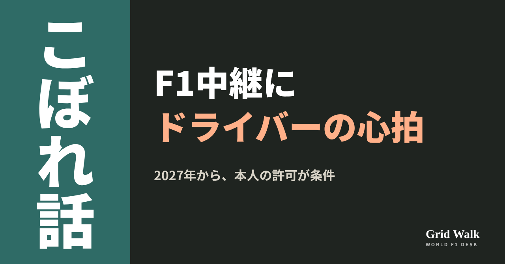<button class="cp dl" data-img="img/f1-biometric-data-verstappen-20261120.png" data-name="f1-biometric-data-verstappen-20261120_見出し画像.png">ダウンロード</button></li>
<li class="st"><div class="hd"><span class="no">2</span><b>タイトル</b></div><div class="bx" id="p2t">フェルスタッペン「僕は関わらない」　F1中継に心拍データ</div><button class="cp" data-plain="p2t">タイトルをコピー</button></li>
<li class="st"><div class="hd"><span class="no">3</span><b>本文</b></div><div class="bx tall" id="p2r"><p>2027年から、F1の中継にドライバーの心拍が映るかもしれません。F1は、体の状態を測る機器のメーカーWHOOPと組み、体のデータを中継に使う計画を発表しました。ただ、レッドブルのマックス・フェルスタッペンは加わらないと言っています。イギリスのThe Raceが11月19日に伝えました。サイトの要約は https://f1gridwalk.github.io/news/en-therace-whoop-biometric-verstappen/ にあります。</p><p>元の記事へのリンクと、暑さとドライバーの体を扱ったDEEPへの案内はサイトで → <a href="https://f1gridwalk.github.io/lens/f1-biometric-data-verstappen-20261120/?utm_source=note&amp;utm_campaign=f1-biometric-data-verstappen-20261120">https://f1gridwalk.github.io/lens/f1-biometric-data-verstappen-20261120/?utm_source=note&amp;utm_campaign=f1-biometric-data-verstappen-20261120</a></p><h2>発表で示したのはルクレールとローソンの心拍</h2><p>The Raceによると、発表では心拍が画面にどう出るかの例として、フェラーリのシャルル・ルクレールのイギリスGPと、レーシングブルズのリアム・ローソンのブラジルGPのデータが使われました。心拍の強さの帯ごとの時間も示され、緊張の目安とされています。どこまで公開するかは、まだはっきりしていません。データを使うには、ドライバー本人の許可が要ります。</p><p>Motorsport.comは11月18日、F1がドライバーと一人ずつ取り決めを詰めていて、少なくとも数人がすでに応じていると伝えました。F1のステファノ・ドメニカリ社長兼CEOは、こう話しています。</p><blockquote><p>「こうした情報が中継で形になるのが待ちきれない。ファンに、まったく新しいF1の味わい方を届けられる」（ドメニカリ、Motorsport.com／イギリス）</p></blockquote><p>中継に心拍が出るのは初めてではありません。The Raceは、1994年のブラジルGPでアイルトン・セナの、その2年前の同じレースでミナルディのクリスチャン・フィッティパルディの心拍が中継に出たことを挙げています。ただ、決まった形で使うのは今回が初めてになるといいます。</p><h2>「追跡されるのは好きじゃない」</h2><p>ブラジルのGrande Prêmioによると、フェルスタッペンはラスベガスGPを前にした取材の場で、この話に答えました。The Raceは、機器を使わないのは主にプライバシーのためだと書いています。</p><blockquote><p>「僕は関わらない」「機器は何も使っていない。トレーニングでも何も使わない。まず、追跡されるのが好きじゃないし、疲れているときは自分でわかるから」（フェルスタッペン、The Race／イギリス）</p></blockquote><p>ほかのドライバーが見せることには反対しないそうです。</p><blockquote><p>「ほかのドライバーがそうしたいなら、どうぞ」「でも、自分が好きなことではないし、人に見られたい、見せたいものでもない」（フェルスタッペン、The Race／イギリス）</p></blockquote><h2>ラッセルは慎重、ルクレールは前向き</h2><p>メルセデスのジョージ・ラッセルは、断らないものの、心拍を比べると誤解を生むおそれがあると話しています。もともとの心拍は年齢で違い、同じ年齢でも人それぞれだからです。</p><blockquote><p>「中立の立場でソファに座って見ていたら、すごく楽しめると思う。でも、人はみんな違う」「生まれつき心拍がほかの人より20拍高いドライバーには、同情するよ」「嫌だとは言わない。でも、今のままでいいと思う」（ラッセル、The Race／イギリス）</p></blockquote><p>一方のルクレールはWHOOPのアンバサダーで、前から回復や睡眠、クルマに乗っているときの記録に使ってきました。今はFIAが認めた機器を、隠さずに着けて走れるようになったと話しました。</p><blockquote><p>「特に隠すことはない」「みんなに見せるのは別の話で、それはきっと話し合うことになる」（ルクレール、The Race／イギリス）</p></blockquote><p>編集部としては、この計画の要は、本人の許可という条件をどう守るかだと見ています。前向きなルクレールでさえ、見せるのは別の話だと言っています。暑さでドライバーの体に何が起きるかは、DEEPの https://f1gridwalk.github.io/deep/heat-sepang/ で取り上げました。</p><p><strong>中継にドライバーの心拍が映ったら、あなたは見てみたいですか？</strong></p><p>━━━━━━━━━━</p><p><strong>F1 Grid Walk では、世界のF1ニュースを毎日日本語でまとめています。</strong></p><p>海外の記事の要約を、毎日載せています。</p><p><a href="https://f1gridwalk.github.io/">https://f1gridwalk.github.io/</a></p><p>ほかの海外記事も読みたい方は、F1 Grid Walkへ。</p><p><a href="https://f1gridwalk.github.io/lens/f1-biometric-data-verstappen-20261120/">https://f1gridwalk.github.io/lens/f1-biometric-data-verstappen-20261120/</a></p><p>━━━━━━━━━━</p><p><a href="https://www.the-race.com/formula-1/f1-2027-biometric-data-plan-whoop-max-verstappen-not-a-fan/">出典：The Race（イギリス）</a></p><p><a href="https://www.motorsport.com/f1/news/f1-to-showcase-driver-health-data-as-it-partners-with-whoop/10875341/">出典：Motorsport.com（イギリス）</a></p><p><a href="https://grandepremio.com/en/f1/verstappen-refuses-f1-whoop-heart-rate-tracking-privacy/">出典：Grande Prêmio（英語版）（ブラジル）</a></p></div><button class="cp" data-rich="p2r">本文をコピー</button></li>
<li class="st"><div class="hd"><span class="no">4</span><b>ハッシュタグ</b></div><div class="bx" id="p2h">#F1 #F1jp #フェルスタッペン #ルクレール #ラッセル #WHOOP #ラスベガスGP #2027年 #F1こぼれ話 #OFFGRID</div><button class="cp" data-plain="p2h">タグをコピー</button></li>
</ol><h3 class="xh">X</h3><ol class="steps">
<li class="st im"><div class="hd"><b>X用の画像</b><em>画像</em></div>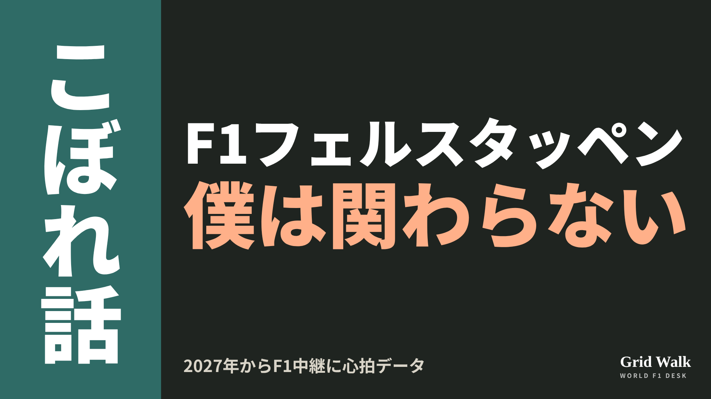<button class="cp dl" data-img="img/x_f1-biometric-data-verstappen-20261120.png" data-name="x_f1-biometric-data-verstappen-20261120.png">ダウンロード</button></li>
<li class="st"><div class="hd"><b>① noteをシェアするときの文</b></div><div class="bx" id="p2x0">F1がWHOOPと組み、2027年から中継でドライバーの心拍データを使う計画です。使うには本人の許可が要ります。フェルスタッペンは「僕は関わらない」。noteにまとめました #F1jp #フェルスタッペン</div><button class="cp" data-plain="p2x0">コピー</button></li>
<li class="st"><div class="hd"><b>② ①への返信</b></div><div class="bx" id="p2x1">ほかの海外記事も読みたい方は、F1 Grid Walkへ。
https://f1gridwalk.github.io/lens/f1-biometric-data-verstappen-20261120/?utm_source=x&amp;utm_campaign=f1-biometric-data-verstappen-20261120</div><button class="cp" data-plain="p2x1">コピー</button></li>
<li class="st"><div class="hd"><b>③ ②への返信</b></div><div class="bx" id="p2x2">毎日の海外F1ニュースは、日本語でこちらにまとめています。
https://f1gridwalk.github.io/</div><button class="cp" data-plain="p2x2">コピー</button></li>
</ol></section><section class="part" id="p3"><h2><span class="tag">OFF GRID</span>アルピーヌに入るはずだった元レッドブルのスキナー、キャデラックに合流</h2><p class="sub">サイトに公開：10:26</p><ol class="steps">
<li class="st im"><div class="hd"><span class="no">1</span><b>見出し画像</b><em>画像</em></div>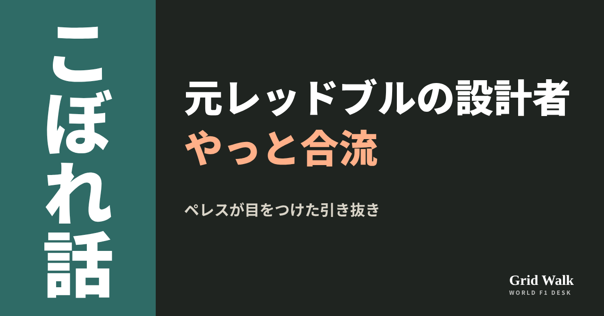<button class="cp dl" data-img="img/cadillac-skinner-joins-20261120.png" data-name="cadillac-skinner-joins-20261120_見出し画像.png">ダウンロード</button></li>
<li class="st"><div class="hd"><span class="no">2</span><b>タイトル</b></div><div class="bx" id="p3t">アルピーヌに入るはずだった元レッドブルのスキナー、キャデラックに合流</div><button class="cp" data-plain="p3t">タイトルをコピー</button></li>
<li class="st"><div class="hd"><span class="no">3</span><b>本文</b></div><div class="bx tall" id="p3r"><p>レッドブルで約20年働き、最後はチーフデザイナーだったクレイグ・スキナーが、ラスベガスGPの週の水曜日、キャデラックにチーフ開発エンジニアとして正式に加わりました。イギリスのThe Raceが11月19日に伝えています。本当はこの夏、アルピーヌで働き始めるはずだった人です。サイトの要約は https://f1gridwalk.github.io/news/en-therace-cadillac-skinner-joins/ にあります。</p><p>元の記事へのリンクと、ニュースの要約はサイトで → <a href="https://f1gridwalk.github.io/lens/cadillac-skinner-joins-20261120/?utm_source=note&amp;utm_campaign=cadillac-skinner-joins-20261120">https://f1gridwalk.github.io/lens/cadillac-skinner-joins-20261120/?utm_source=note&amp;utm_campaign=cadillac-skinner-joins-20261120</a></p><h2>契約の条件で3か月待つ</h2><p>The Raceによると、スキナーは2月にレッドブルを離れ、ガーデニング休暇（次の仕事にすぐ就かずに待つ期間）に入りました。8月からはアルピーヌで働く予定で、チームの中では新しい仲間として紹介されていたといいます。それを直前で止めたのがキャデラックです。チーム代表がグレアム・ロードンからマルチン・ブコウスキーに代わったあと、スキナーを口説き、元レッドブルのドライバーのセルジオ・ペレスと再び組む道を選ばせたと記事は書いています。</p><p>ただ、キャデラックはすぐには迎えられませんでした。アルピーヌが、スキナー本人の契約にある、契約を離れるときの条件を適用したためです。スキナーはアルピーヌで働き始めていないものの、3か月の休みを取ることになったと記事は書いています。</p><p>キャデラックがスキナーら3人の獲得を発表したのは9月24日です。オランダのGPblogはその日、アルピーヌは契約で決められた期間が過ぎるまで移籍は認められないという立場だと報じ、スキナーが11月18日に仕事を始める予定だとも伝えました。合流した水曜日は、その11月18日にあたります。</p><h2>ペレスの人脈と、ペレスの言葉</h2><p>キャデラックでのスキナーは、チーフ・テクニカル・オフィサーのニック・チェスターに報告する立場です。9月のThe Raceの記事によると、開発の進め方全体に技術面の方向を示す役目です。</p><p>The Raceは、何か月も前にスキナーを獲得の目標に挙げていたのはペレスだったとみられ、ペレスはチームに採用で強気に出るよう強く求めていたと伝えています。チームの過半数を持つTWGモータースポーツを率いるダン・タウリスも、ペレスが自分の人脈を使い、人材を見つけるうえで大きな役割を果たしてきたと話したといいます。</p><p>新しく来た人たちがチームをどれだけ変えるか。The Raceにそう聞かれたペレスは、こう答えています。</p><blockquote><p>「大きいよ。彼らはF1で何でもやってきた人たちだから」「彼らがここにいるのは、違うプロジェクトで自分を証明したいからだ」「彼らの実力はみんな知っている。でも、これは違うプロジェクトで、この文化を、この人たちを、しっかり据えていかないといけない」（ペレス、The Race／イギリス）</p></blockquote><p>記事によると、ペレスは、もっと早く強化すべきだったと感じる分野で採用が進んでいないことを気にしていました。同じ9月に発表された空力の責任者エリック・ブランダンは、ラスベガスで初めてサーキットに来ています。マクラーレン、レッドブル、フェラーリにいたティム・リーンは、2027年1月に合流します。</p><p>編集部としては、この補強の答えが見えるのは来季だと見ています。スキナーの仕事は開発の流れ全体にかかわるもので、加わったのは今季の残りが3戦になった時点だからです。ペレス自身も、こう話しています。</p><blockquote><p>「僕たちみんなが十分に賢ければ、彼らの経験を全部使って、彼らから全部を引き出すべきだと思う」（ペレス、The Race／イギリス）</p></blockquote><p><strong>アルピーヌに行くはずだった設計者を、キャデラックは3か月待って迎えました。この補強は、2027年のキャデラックをどこまで押し上げると思いますか？</strong></p><p>━━━━━━━━━━</p><p><strong>F1 Grid Walk では、世界のF1ニュースを毎日日本語でまとめています。</strong></p><p>海外の記事の要約を、毎日載せています。</p><p><a href="https://f1gridwalk.github.io/">https://f1gridwalk.github.io/</a></p><p>ほかの海外記事も読みたい方は、F1 Grid Walkへ。</p><p><a href="https://f1gridwalk.github.io/lens/cadillac-skinner-joins-20261120/">https://f1gridwalk.github.io/lens/cadillac-skinner-joins-20261120/</a></p><p>━━━━━━━━━━</p><p><a href="https://www.the-race.com/formula-1/ex-red-bull-hire-cadillac-stole-from-alpine-finally-joins/">出典：The Race（イギリス）</a></p><p><a href="https://www.formula1.com/en/latest/article/cadillac-recruit-technical-leaders-from-red-bull-and-ferrari-as-part-of-long-term-development.5bNqxMySRCCuU69CY5Es7w">出典：F1公式サイト（イギリス）</a></p><p><a href="https://the-race.com/formula-1/cadillac-unveils-major-f1-hires-who-worked-at-top-teams">出典：The Race（イギリス）</a></p><p><a href="https://www.gpblog.com/en/exclusive-news/cadillac-hires-former-red-bull-key-figure-but-alpine-blocks-the-move-for-now">出典：GPblog（オランダ）</a></p></div><button class="cp" data-rich="p3r">本文をコピー</button></li>
<li class="st"><div class="hd"><span class="no">4</span><b>ハッシュタグ</b></div><div class="bx" id="p3h">#F1 #F1jp #キャデラック #スキナー #ペレス #アルピーヌ #レッドブル #ラスベガスGP #F1こぼれ話 #OFFGRID</div><button class="cp" data-plain="p3h">タグをコピー</button></li>
</ol><h3 class="xh">X</h3><ol class="steps">
<li class="st im"><div class="hd"><b>X用の画像</b><em>画像</em></div>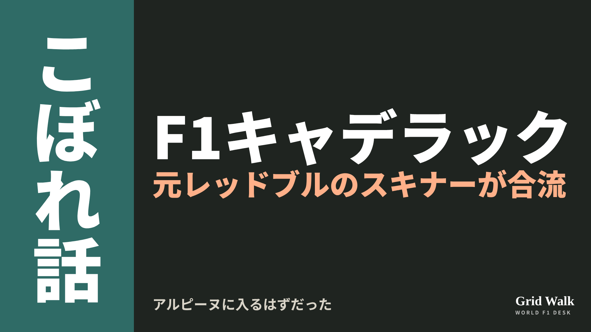<button class="cp dl" data-img="img/x_cadillac-skinner-joins-20261120.png" data-name="x_cadillac-skinner-joins-20261120.png">ダウンロード</button></li>
<li class="st"><div class="hd"><b>① noteをシェアするときの文</b></div><div class="bx" id="p3x0">レッドブルで約20年働いたクレイグ・スキナーが、キャデラックに正式に加わりました。夏にはアルピーヌに入る予定でした。英The Raceは、目をつけていたのはペレスだったと伝えています。noteにまとめました #F1jp #キャデラック</div><button class="cp" data-plain="p3x0">コピー</button></li>
<li class="st"><div class="hd"><b>② ①への返信</b></div><div class="bx" id="p3x1">ほかの海外記事も読みたい方は、F1 Grid Walkへ。
https://f1gridwalk.github.io/lens/cadillac-skinner-joins-20261120/?utm_source=x&amp;utm_campaign=cadillac-skinner-joins-20261120</div><button class="cp" data-plain="p3x1">コピー</button></li>
<li class="st"><div class="hd"><b>③ ②への返信</b></div><div class="bx" id="p3x2">毎日の海外F1ニュースは、日本語でこちらにまとめています。
https://f1gridwalk.github.io/</div><button class="cp" data-plain="p3x2">コピー</button></li>
</ol></section><section class="part" id="p4"><h2><span class="tag">OFF GRID</span>ルクレール「全部が大げさにされた」　緊張の話は5〜10分</h2><p class="sub">サイトに公開：10:27</p><ol class="steps">
<li class="st im"><div class="hd"><span class="no">1</span><b>見出し画像</b><em>画像</em></div>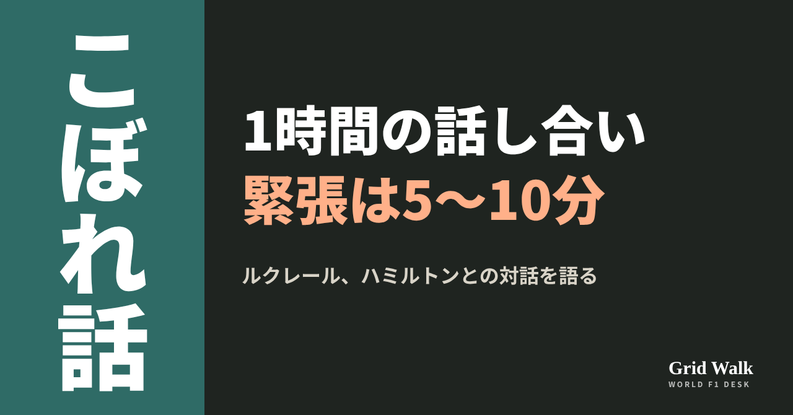<button class="cp dl" data-img="img/leclerc-hamilton-talk-20261120.png" data-name="leclerc-hamilton-talk-20261120_見出し画像.png">ダウンロード</button></li>
<li class="st"><div class="hd"><span class="no">2</span><b>タイトル</b></div><div class="bx" id="p4t">ルクレール「全部が大げさにされた」　緊張の話は5〜10分</div><button class="cp" data-plain="p4t">タイトルをコピー</button></li>
<li class="st"><div class="hd"><span class="no">3</span><b>本文</b></div><div class="bx tall" id="p4r"><p>1時間の話し合いのうち、2人の間の緊張について話したのは5分か10分だけ。フェラーリのシャルル・ルクレールが、チームメイトのルイス・ハミルトン、フレデリック・バスール代表との話し合いを、こう振り返りました。ラスベガスGPを前に、オランダのRacingNews365などの取材に答え、同サイトが11月19日に伝えました。</p><p>元の記事へのリンクと、メキシコのあとの各国の報道をまとめたコラムはサイトで → <a href="https://f1gridwalk.github.io/lens/leclerc-hamilton-talk-20261120/?utm_source=note&amp;utm_campaign=leclerc-hamilton-talk-20261120">https://f1gridwalk.github.io/lens/leclerc-hamilton-talk-20261120/?utm_source=note&amp;utm_campaign=leclerc-hamilton-talk-20261120</a></p><blockquote><p>「3人で集まって、話し合いはとてもうまくいきました」「少し話すだけでよかった。いくつか言葉を交わしたら、張りつめていた空気はもうなくなっていました」（ルクレール、RacingNews365／オランダ）</p></blockquote><blockquote><p>「互いの緊張について話した部分は、たぶん5分か10分くらいでした」（同）</p></blockquote><p>話し合い全体は1時間ほどになったといいます（RacingNews365、GPblog）。サイトの要約は https://f1gridwalk.github.io/news/nl-racingnews365-leclerc-hamilton-gesprek/ にあります。</p><h2>きっかけはメキシコの1周目</h2><p>発端は11月1日のメキシコシティGPです。1周目にハミルトンとルクレールが激しく争い、フェラーリは1-2で終われそうだったレースを落とした、とRacingNews365は書いています。F1公式の結果では、優勝はマックス・フェルスタッペン（レッドブル）で、ハミルトンが2位、ルクレールが4位でした。レース後の各国の書き方は、コラム https://f1gridwalk.github.io/lens/hamilton-leclerc-rift-20261107/ にまとめています。</p><p>RacingNews365によると、3人の話し合いは、チームの中のもめごとを防ぐために用意されたものです。ハミルトンはサンパウロGPの予選のあと、イギリスのSky Sportsに、代表が空気を変えたのではなく、自分とシャルルが座って話したのだ、という趣旨を話していました。GPblog（オランダ。英語版）はこれを代表抜きの解決として見出しにしましたが、同じ記事で、代表が木曜日の夜に2人と席についたとも書いています。ルクレールは代表の役割をこう話しています。</p><blockquote><p>「フレッドは間違いなく関わっていました。話し合いの場にいたし、話し合いを用意したのも彼です」（ルクレール、GPblog／オランダ。英語版）</p></blockquote><h2>どの報道かは名指しせず</h2><blockquote><p>「全部が大げさにされたと思います」「物事は、実際よりずっと大きくされることがとても多いんです」（ルクレール、RacingNews365／オランダ）</p></blockquote><p>どの記事や発言を指しているのかは、名前を挙げていません。GPblogによると、長くフェラーリで走ってきたので、もうそれには慣れた、とも話しています。意見が分かれること自体は認めていて、メキシコがその例だったと言います。</p><blockquote><p>「もちろん、いつも意見が合うことが目標ではありません」（ルクレール、RacingNews365／オランダ）</p></blockquote><h2>2人で決めたのはチームの2位</h2><p>話し合いで2人が決めたのは、コンストラクターズ選手権の2位のために、そろって力を尽くすことでした。</p><blockquote><p>「その2位は大事です」（ルクレール、RacingNews365／オランダ）</p></blockquote><p>F1公式の順位表では、サンパウロGPを終えてフェラーリが510点で2位、3位のレッドブルは415点で、差は95点です。残りはラスベガス、カタール、アブダビの3戦です。それでもルクレールはGPblogに、自分にとって今いちばん大事なのは、シーズンが終わるまでにレースで勝つことだと話しました。</p><p>編集部としては、5〜10分という具体的な数字に、ルクレールが伝えたかったことがよく出ていると見ています。代表が場を用意し、空気を変えたのは2人の言葉だったと読めば、ハミルトンの話とも大きくは食い違いません。</p><p><strong>緊張の話は5分か10分で済んだ、というルクレールの言葉を、あなたはそのまま受け取りますか？</strong></p><p>━━━━━━━━━━</p><p><strong>F1 Grid Walk では、世界のF1ニュースを毎日日本語でまとめています。</strong></p><p>海外の記事の要約を、毎日載せています。</p><p><a href="https://f1gridwalk.github.io/">https://f1gridwalk.github.io/</a></p><p>ほかの海外記事も読みたい方は、F1 Grid Walkへ。</p><p><a href="https://f1gridwalk.github.io/lens/leclerc-hamilton-talk-20261120/">https://f1gridwalk.github.io/lens/leclerc-hamilton-talk-20261120/</a></p><p>━━━━━━━━━━</p><p><a href="https://racingnews365.nl/leclerc-geeft-opvallend-inkijkje-in-gesprek-met-hamilton">出典：RacingNews365（オランダ）</a></p><p><a href="https://www.gpblog.com/en/news/leclerc-reveals-what-really-happened-in-private-meeting-with-hamilton">出典：GPblog（英語版）（オランダ）</a></p><p><a href="https://www.gpblog.com/en/news/hamilton-reveals-he-and-leclerc-settled-mexico-feud-without-vasseur-no-demands-from-either-side">出典：GPblog（英語版）（オランダ）</a></p><p><a href="https://www.formula1.com/en/results/2026/races/1298/mexico/race-result">出典：F1公式サイト（イギリス）</a></p><p><a href="https://www.formula1.com/en/results/2026/team">出典：F1公式サイト（イギリス）</a></p><p><a href="https://www.formula1.com/en/results/2026/races">出典：F1公式サイト（イギリス）</a></p></div><button class="cp" data-rich="p4r">本文をコピー</button></li>
<li class="st"><div class="hd"><span class="no">4</span><b>ハッシュタグ</b></div><div class="bx" id="p4h">#F1 #F1jp #フェラーリ #ルクレール #ハミルトン #バスール #ラスベガスGP #F1こぼれ話 #OFFGRID</div><button class="cp" data-plain="p4h">タグをコピー</button></li>
</ol><h3 class="xh">X</h3><ol class="steps">
<li class="st im"><div class="hd"><b>X用の画像</b><em>画像</em></div>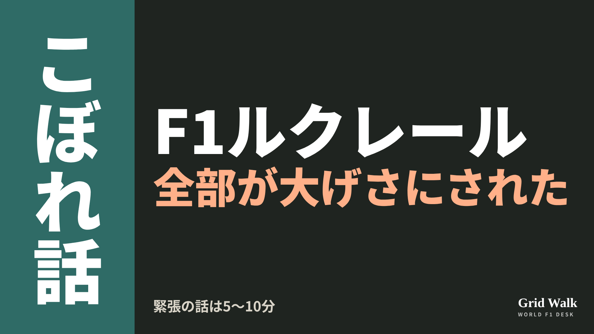<button class="cp dl" data-img="img/x_leclerc-hamilton-talk-20261120.png" data-name="x_leclerc-hamilton-talk-20261120.png">ダウンロード</button></li>
<li class="st"><div class="hd"><b>① noteをシェアするときの文</b></div><div class="bx" id="p4x0">メキシコのあと、ハミルトン、バスール代表と3人で話し合ったルクレール。「全部が大げさにされた」と話し、緊張について話したのは1時間のうち5分か10分だったと明かしました。noteにまとめました #F1jp #ルクレール #フェラーリ</div><button class="cp" data-plain="p4x0">コピー</button></li>
<li class="st"><div class="hd"><b>② ①への返信</b></div><div class="bx" id="p4x1">ほかの海外記事も読みたい方は、F1 Grid Walkへ。
https://f1gridwalk.github.io/lens/leclerc-hamilton-talk-20261120/?utm_source=x&amp;utm_campaign=leclerc-hamilton-talk-20261120</div><button class="cp" data-plain="p4x1">コピー</button></li>
<li class="st"><div class="hd"><b>③ ②への返信</b></div><div class="bx" id="p4x2">毎日の海外F1ニュースは、日本語でこちらにまとめています。
https://f1gridwalk.github.io/</div><button class="cp" data-plain="p4x2">コピー</button></li>
</ol></section><section class="part" id="p5"><h2><span class="tag">OFF GRID</span>ハミルトン「絶対に信頼の問題ではない」　情報が足りなかったと説明</h2><p class="sub">サイトに公開：10:28</p><ol class="steps">
<li class="st im"><div class="hd"><span class="no">1</span><b>見出し画像</b><em>画像</em></div>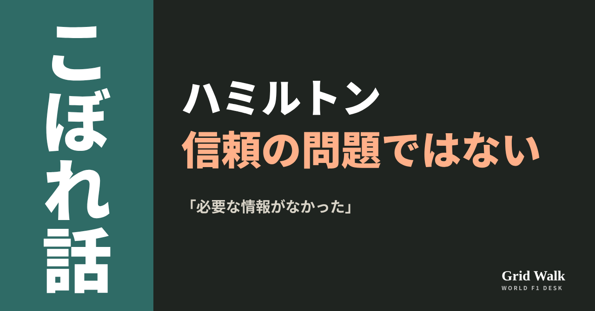<button class="cp dl" data-img="img/hamilton-not-about-trust-20261120.png" data-name="hamilton-not-about-trust-20261120_見出し画像.png">ダウンロード</button></li>
<li class="st"><div class="hd"><span class="no">2</span><b>タイトル</b></div><div class="bx" id="p5t">ハミルトン「絶対に信頼の問題ではない」　情報が足りなかったと説明</div><button class="cp" data-plain="p5t">タイトルをコピー</button></li>
<li class="st"><div class="hd"><span class="no">3</span><b>本文</b></div><div class="bx tall" id="p5r"><p>ラスベガスGPを前に、フェラーリのルイス・ハミルトンが、チームとの間に信頼がないのでは、という見方をはっきり打ち消しました。フランスのF1iは11月19日、ハミルトンの言葉をこう伝えています。</p><p>元の記事へのリンクと、シンガポールのVSCの場面の読み解きへの案内はサイトで → <a href="https://f1gridwalk.github.io/lens/hamilton-not-about-trust-20261120/?utm_source=note&amp;utm_campaign=hamilton-not-about-trust-20261120">https://f1gridwalk.github.io/lens/hamilton-not-about-trust-20261120/?utm_source=note&amp;utm_campaign=hamilton-not-about-trust-20261120</a></p><blockquote><p>「絶対に信頼の問題ではない。僕たちはコミュニケーションに、いつも取り組んでいる」（ハミルトン、F1i／フランス）</p></blockquote><p>イギリスのMotorsport Weekも同じ日に、ハミルトンがラスベガスGPを前に、同誌をふくむ報道陣に話したと伝えました。こちらの書き起こしは &quot;No, it&#x27;s definitely not trusting.&quot; で、言い回しが少し違います。ハミルトンは今季、サンパウロGPを終えてドライバーズ選手権4位、261点です（F1公式）。</p><h2>コースにとどまった2つのレース</h2><p>話の出どころは、秋の2つのレースです。F1iによると、10月のシンガポールGPでは、バーチャルセーフティカー（VSC）の間にピットに入らずコースにとどまり、タイヤのグリップを失って、表彰台の可能性があった位置から順位を落としました。F1公式の結果では6位。ハミルトンはあとで謝っています（F1i）。</p><p>11月8日のサンパウロGPでは、雨が強まるなかでスリックタイヤのまま走り続け、最終コーナーでスピンしました。1周あとにピットに入り、9位で終えています（F1i、順位はF1公式）。</p><p>F1iは、2つの判断はどちらも悪い結果に終わったとしたうえで、ハミルトンはピットウォールと組みたくないのではなく、自分に届く情報が足りなかったことを理由に挙げている、と書いています。Motorsport Weekによると、ハミルトンは、そういうことがあったのはこの2回だけだとしたうえで、こう話しました。</p><blockquote><p>「とくに前回は、必要な情報がなかったし、指示が来たのは最後の最後だった」（ハミルトン、Motorsport Week／イギリス）</p></blockquote><p>シンガポールのVSCの場面は、読み解き https://f1gridwalk.github.io/topics/hamilton-singapore-strategy-blame/ でくわしく追っています。</p><h2>名前を出してかばったエンジニア</h2><p>ハミルトンが名前を出してかばったのは、今季から組むレースエンジニアのカルロ・サンティです。Motorsport Weekは、去年の担当のリカルド・アダミとの間にはコミュニケーションの問題があった、と書いています。</p><blockquote><p>「今年はずっと良くなったと思う。カルロは素晴らしい仕事をしてくれている」（ハミルトン、Motorsport Week／イギリス）</p></blockquote><p>サンティがどんなエンジニアかは https://f1gridwalk.github.io/deep/rules/person-carlo-santi/ にまとめています。チームメイトのシャルル・ルクレールについても、ハミルトンは争うことに「心配も不安もない」と話しました（F1i）。そして、チーム全体についてはこう続けています。</p><blockquote><p>「僕たちはとても団結していて、正しい方向に向かって取り組んでいると思う」（ハミルトン、Motorsport Week／イギリス）</p></blockquote><p>編集部としては、ハミルトンが問題の中身を、信頼から情報の届き方に置き直した点が大事だと見ています。2つのレースで欠けていたものが本当に情報だったのかは、外からはわかりません。ラスベガスは今季の残り3戦の最初のレースです。次に同じような場面が来たとき、指示がいつ届き、ハミルトンがどう動くかで、この言葉の重みが決まりそうです。</p><p><strong>コースにとどまる判断が裏目に出たとき、足りなかったのはチームの情報か、ドライバーの判断か。あなたはどちらだと見ますか？</strong></p><p>━━━━━━━━━━</p><p><strong>F1 Grid Walk では、世界のF1ニュースを毎日日本語でまとめています。</strong></p><p>海外の記事の要約を、毎日載せています。</p><p><a href="https://f1gridwalk.github.io/">https://f1gridwalk.github.io/</a></p><p>ほかの海外記事も読みたい方は、F1 Grid Walkへ。</p><p><a href="https://f1gridwalk.github.io/lens/hamilton-not-about-trust-20261120/">https://f1gridwalk.github.io/lens/hamilton-not-about-trust-20261120/</a></p><p>━━━━━━━━━━</p><p><a href="https://f1i.com/news/578239-hamilton-dismisses-ferrari-trust-concerns-despite-strategy-friction.html">出典：F1i（フランス）</a></p><p><a href="https://www.motorsportweek.com/2026/11/19/lewis-hamilton-hits-back-at-no-trust-claims-at-ferrari/">出典：Motorsport Week（イギリス）</a></p><p><a href="https://www.formula1.com/en/results/2026/drivers">出典：F1公式サイト（イギリス）</a></p><p><a href="https://www.formula1.com/en/results/2026/races/1296/singapore/race-result">出典：F1公式サイト（イギリス）</a></p><p><a href="https://www.formula1.com/en/results/2026/races/1299/brazil/race-result">出典：F1公式サイト（イギリス）</a></p></div><button class="cp" data-rich="p5r">本文をコピー</button></li>
<li class="st"><div class="hd"><span class="no">4</span><b>ハッシュタグ</b></div><div class="bx" id="p5h">#F1 #F1jp #フェラーリ #ハミルトン #ラスベガスGP #チーム無線 #F1こぼれ話 #OFFGRID</div><button class="cp" data-plain="p5h">タグをコピー</button></li>
</ol><h3 class="xh">X</h3><ol class="steps">
<li class="st im"><div class="hd"><b>X用の画像</b><em>画像</em></div>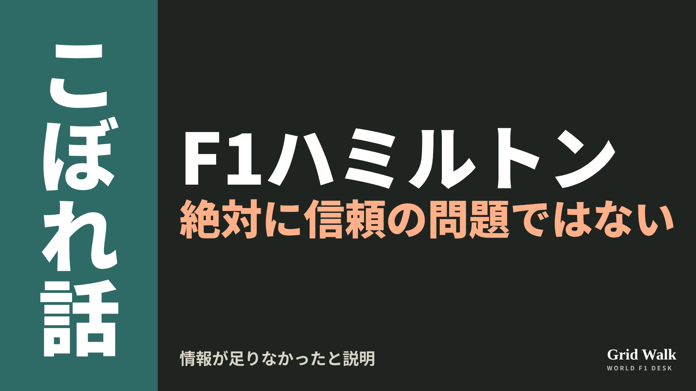<button class="cp dl" data-img="img/x_hamilton-not-about-trust-20261120.png" data-name="x_hamilton-not-about-trust-20261120.png">ダウンロード</button></li>
<li class="st"><div class="hd"><b>① noteをシェアするときの文</b></div><div class="bx" id="p5x0">ハミルトンが、フェラーリとの信頼の問題を「絶対に信頼の問題ではない」と否定しました。秋の2戦でコースにとどまった判断については、情報が足りなかったと説明しています。noteにまとめました #F1jp #ハミルトン #フェラーリ</div><button class="cp" data-plain="p5x0">コピー</button></li>
<li class="st"><div class="hd"><b>② ①への返信</b></div><div class="bx" id="p5x1">ほかの海外記事も読みたい方は、F1 Grid Walkへ。
https://f1gridwalk.github.io/lens/hamilton-not-about-trust-20261120/?utm_source=x&amp;utm_campaign=hamilton-not-about-trust-20261120</div><button class="cp" data-plain="p5x1">コピー</button></li>
<li class="st"><div class="hd"><b>③ ②への返信</b></div><div class="bx" id="p5x2">毎日の海外F1ニュースは、日本語でこちらにまとめています。
https://f1gridwalk.github.io/</div><button class="cp" data-plain="p5x2">コピー</button></li>
</ol></section><section class="part" id="p6"><h2><span class="tag">OFF GRID</span>サインツ「今も分からない」　レッドブルとマクラーレンの年7〜8回改良</h2><p class="sub">サイトに公開：10:29</p><ol class="steps">
<li class="st im"><div class="hd"><span class="no">1</span><b>見出し画像</b><em>画像</em></div>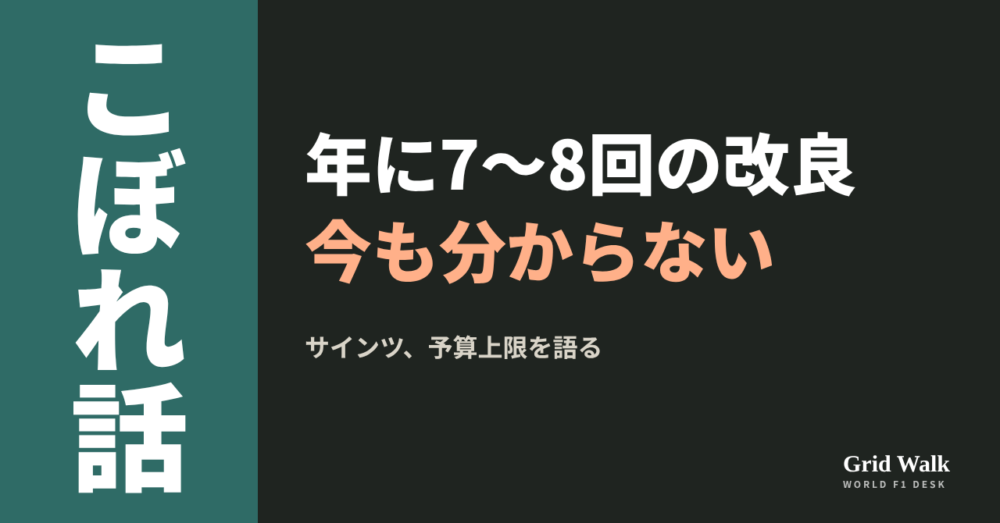<button class="cp dl" data-img="img/sainz-upgrades-budget-cap-20261120.png" data-name="sainz-upgrades-budget-cap-20261120_見出し画像.png">ダウンロード</button></li>
<li class="st"><div class="hd"><span class="no">2</span><b>タイトル</b></div><div class="bx" id="p6t">サインツ「今も分からない」　レッドブルとマクラーレンの年7〜8回改良</div><button class="cp" data-plain="p6t">タイトルをコピー</button></li>
<li class="st"><div class="hd"><span class="no">3</span><b>本文</b></div><div class="bx tall" id="p6r"><p>ライバルは、どうしてあんなに何度もクルマを改良できるのか。ウィリアムズのカルロス・サインツが、そう首をかしげています。オランダのF1Maximaalは11月19日、サインツがラスベガスGPを前にスペインのスポーツ紙MARCAに話した言葉として、こう伝えました。</p><p>元の記事へのリンクと、予算上限やADUOの用語解説はサイトで → <a href="https://f1gridwalk.github.io/lens/sainz-upgrades-budget-cap-20261120/?utm_source=note&amp;utm_campaign=sainz-upgrades-budget-cap-20261120">https://f1gridwalk.github.io/lens/sainz-upgrades-budget-cap-20261120/?utm_source=note&amp;utm_campaign=sainz-upgrades-budget-cap-20261120</a></p><blockquote><p>「彼らがどうやっているのか、今も分からない」（サインツ、MARCA／スペイン、F1Maximaal・オランダが伝えた）</p></blockquote><p>名前を挙げたのは、マクラーレンとレッドブルです。</p><blockquote><p>「マクラーレンやレッドブルのようなチームが、1年のあいだに7つか8つのアップデートを入れ続けられるのが分からない」「僕たちは、2つ目のアップデートの時点で、もう予算の上限にとても近かった」（サインツ、F1Maximaal／オランダ）</p></blockquote><p>スペインのEFE通信も、ラスベガスGPの前日の言葉として、同じ話を伝えています。サイトの要約は https://f1gridwalk.github.io/news/nl-f1maximaal-sainz-redbull-upgrades/ に。</p><h2>違反を言ったのではない</h2><p>ここで話しているのは、チームが1年に使えるお金の上限、コストキャップ（予算上限）のことです。2026年は2億1500万ドル。仕組みは用語解説 https://f1gridwalk.github.io/deep/rules/cost-cap/ で。</p><p>F1Maximaalは、サインツがレッドブルやマクラーレンの規則違反をほのめかしたわけではない、と書いています。本人の言葉は、こうです。</p><blockquote><p>「彼らは、何かまったく違うことを、とてもうまくやっているはずだ」「どこかから持ってきているはずだ。僕たちの財務を見ると、もっとアップデートを入れる余地を見つけるのは無理だから」（サインツ、F1Maximaal／オランダ）</p></blockquote><h2>お金が設備に消える</h2><p>サインツが理由に挙げるのは、設備の差です。F1Maximaalによると、ウィリアムズは、ほかのトップチームが何年も前から高い水準でそろえている施設に、予算の一部を回さなければなりません。</p><blockquote><p>「今、僕たちは追いつこうとして、設備にたくさん投資し、施設を良くしないといけない」「チームの施設のためのADUOが提案されていて、とても理にかなっていると思う」（サインツ、F1Maximaal／オランダ）</p></blockquote><p>ADUOは、2026年の新しいパワーユニットで出遅れたメーカーに、追加の開発とアップグレードの機会を与える仕組みです（https://f1gridwalk.github.io/deep/rules/aduo/ ）。施設のためのADUOを誰が出し、どんな中身なのかは、F1Maximaalは書いていません。設備への投資と予算上限の関係は https://f1gridwalk.github.io/deep/rules/capex/ に。</p><p>同じ話は、10月にもしていました。motor.esは、イギリスのRaceFansの記事として、サインツのこんな言葉を伝えています。</p><blockquote><p>「20年の投資不足は、予算上限のもとでは早く取り戻せない」「予算上限が、そこに投資させてくれる必要がある。それだけのことだ」（サインツ、RaceFans／イギリス、motor.es・スペインが伝えた）</p></blockquote><p>足元も厳しいままです。F1Maximaalによると、ウィリアムズはレーシングブルズに約1秒届かず、サインツは最後の3戦を、来年のための情報を集める場と見ています。</p><blockquote><p>「単純に、速さが足りない」「だから、点を取れる可能性は本当にとても小さい」「今のところ、僕たちのクルマはコーナーが好きじゃない」（サインツ、F1Maximaal／オランダ）</p></blockquote><p>F1Maximaalは、ラスベガスには少し望みがあるとも書いています。</p><p>編集部としては、これは改良の数への不満というより、設備の遅れを予算上限の中で取り戻す難しさの話だと見ています。上限は同じでも、そのお金で何を買う必要があるかは、チームによって違うからです。ウィリアムズの終盤の戦い方は https://f1gridwalk.github.io/lens/williams-sainz-albon-test-drivers-20261116/ でも書きました。</p><p><strong>設備が遅れているチームには、予算上限の中で特別な扱いを認めるべきだと思いますか？</strong></p><p>━━━━━━━━━━</p><p><strong>F1 Grid Walk では、世界のF1ニュースを毎日日本語でまとめています。</strong></p><p>海外の記事の要約を、毎日載せています。</p><p><a href="https://f1gridwalk.github.io/">https://f1gridwalk.github.io/</a></p><p>ほかの海外記事も読みたい方は、F1 Grid Walkへ。</p><p><a href="https://f1gridwalk.github.io/lens/sainz-upgrades-budget-cap-20261120/">https://f1gridwalk.github.io/lens/sainz-upgrades-budget-cap-20261120/</a></p><p>━━━━━━━━━━</p><p><a href="https://www.f1maximaal.nl/formule-1/sainz-zet-vraagtekens-bij-red-bull-daar-begrijp-ik-helemaal-niets-van">出典：F1Maximaal（オランダ）</a></p><p><a href="https://www.infobae.com/espana/agencias/2026/11/19/carlos-sainz-no-me-gusta-ser-piloto-de-pruebas-los-fines-de-semana-de-carrera/">出典：EFE（Infobae）（スペイン）</a></p><p><a href="https://www.motor.es/formula-1/sainz-reacciona-palabras-vowles-limite-gasto-f1-batalla-politica-2026116955.html">出典：motor.es（スペイン）</a></p></div><button class="cp" data-rich="p6r">本文をコピー</button></li>
<li class="st"><div class="hd"><span class="no">4</span><b>ハッシュタグ</b></div><div class="bx" id="p6h">#F1 #F1jp #サインツ #ウィリアムズ #レッドブル #マクラーレン #予算上限 #ラスベガスGP #F1こぼれ話 #OFFGRID</div><button class="cp" data-plain="p6h">タグをコピー</button></li>
</ol><h3 class="xh">X</h3><ol class="steps">
<li class="st im"><div class="hd"><b>X用の画像</b><em>画像</em></div>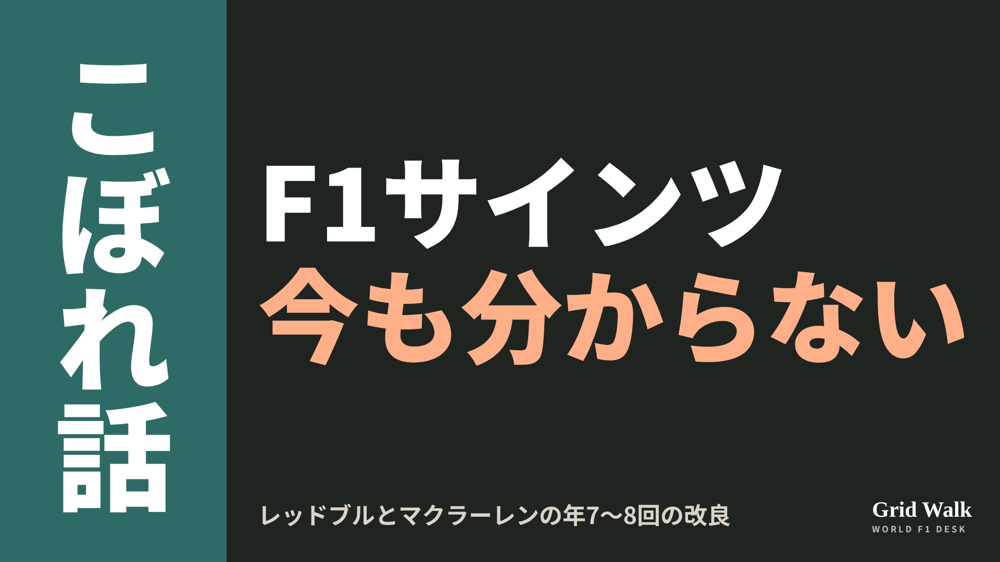<button class="cp dl" data-img="img/x_sainz-upgrades-budget-cap-20261120.png" data-name="x_sainz-upgrades-budget-cap-20261120.png">ダウンロード</button></li>
<li class="st"><div class="hd"><b>① noteをシェアするときの文</b></div><div class="bx" id="p6x0">ウィリアムズのサインツが、マクラーレンとレッドブルが年に7〜8回もアップデートを入れられることについて「今も分からない」。理由に挙げたのは施設の差です。noteにまとめました #F1jp #サインツ #ウィリアムズ</div><button class="cp" data-plain="p6x0">コピー</button></li>
<li class="st"><div class="hd"><b>② ①への返信</b></div><div class="bx" id="p6x1">ほかの海外記事も読みたい方は、F1 Grid Walkへ。
https://f1gridwalk.github.io/lens/sainz-upgrades-budget-cap-20261120/?utm_source=x&amp;utm_campaign=sainz-upgrades-budget-cap-20261120</div><button class="cp" data-plain="p6x1">コピー</button></li>
<li class="st"><div class="hd"><b>③ ②への返信</b></div><div class="bx" id="p6x2">毎日の海外F1ニュースは、日本語でこちらにまとめています。
https://f1gridwalk.github.io/</div><button class="cp" data-plain="p6x2">コピー</button></li>
</ol></section><section class="part" id="p7"><h2><span class="tag">OFF GRID</span>ストロール「ほとんど危険なくらい」　直線だけで2秒負ける見通し</h2><p class="sub">サイトに公開：10:30</p><ol class="steps">
<li class="st im"><div class="hd"><span class="no">1</span><b>見出し画像</b><em>画像</em></div>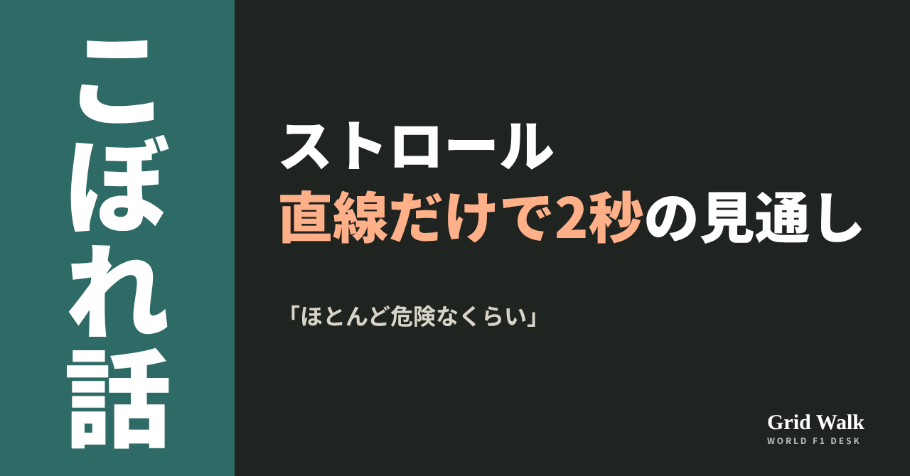<button class="cp dl" data-img="img/stroll-underpowered-20261120.png" data-name="stroll-underpowered-20261120_見出し画像.png">ダウンロード</button></li>
<li class="st"><div class="hd"><span class="no">2</span><b>タイトル</b></div><div class="bx" id="p7t">ストロール「ほとんど危険なくらい」　直線だけで2秒負ける見通し</div><button class="cp" data-plain="p7t">タイトルをコピー</button></li>
<li class="st"><div class="hd"><span class="no">3</span><b>本文</b></div><div class="bx tall" id="p7r"><p>ラスベガスGPを前にした11月18日（水）、FIAの記者会見に、アストンマーティンのランス・ストロールが、マクラーレンのランド・ノリス、キャデラックのバルテリ・ボッタスと並びました。いいクルマならこのコースは楽しめるか、と聞かれたストロールの答えは、今週末はあまり楽しめそうにない、というものでした。</p><p>FIAの会見の記録と、リタイアの記録を伝えた各紙の記事へのリンクはサイトで → <a href="https://f1gridwalk.github.io/lens/stroll-underpowered-20261120/?utm_source=note&amp;utm_campaign=stroll-underpowered-20261120">https://f1gridwalk.github.io/lens/stroll-underpowered-20261120/?utm_source=note&amp;utm_campaign=stroll-underpowered-20261120</a></p><blockquote><p>「たぶん、直線だけで2秒くらい負ける」「ときには、ほとんど危険なくらいなんだ。あのパワー不足、足りない分の大きさは」（ストロール、FIAの記者会見の記録）</p></blockquote><h2>長い直線と、足りないパワー</h2><p>今週末の見通しを聞かれたときも、話はパワーのことでした。</p><blockquote><p>「たぶん、僕たちには厳しい週末になる」「ここは長い直線がたくさんあって、僕たちはパワーがかなり足りないとわかっている」（ストロール、FIAの記者会見の記録）</p></blockquote><p>スペインのMotor.esは11月19日、この発言をホンダのパワーユニットの現状を映すものとして伝えました。同サイトは、ハンガリーでAMR26のBスペックが入ってクルマは良くなったものの、ホンダは同じだけの前進ができていないと書いています。会見の記録では、ストロール自身はホンダの名前を出していません。</p><p>同じラスベガスで、ストロールは2023年に19番グリッドから5位に入っています（F1公式）。会見でその話を振られると、こう振り返りました。</p><blockquote><p>「たしか、エンジンの罰で最後尾から出なければならなかった。そのあとは、いいクルマだったんだ」（ストロール、FIAの記者会見の記録）</p></blockquote><p>ただ、F1公式によると、このときの罰は、FP3で2本の黄旗が振られている中で追い越したことによる5グリッド降格でした。</p><h2>13回のリタイアと、数え方で変わる記録</h2><p>F1公式の結果では、ストロールは第20戦サンパウロGPまでの20戦で、DNF（リタイア）が13回です。開幕戦オーストラリアは15周遅れのNC（完走扱いにならず）で、DNFには入りません。順位がついたのは6戦で、最高はバーレーンの12位。点はまだ0です。</p><p>1シーズンのリタイアの最多記録は、数え方で変わります。motorsport.com スペイン語版は11月11日、記録はデ・チェザリスが1987年にブラバムで残した16回だとし、残り3戦をすべて完走できなければ並ぶと書いています。同サイトは、止まったレースをすべて数えるか、完走扱いにならなかったものだけを数えるかで数字が変わると説明し、デ・チェザリスがこの年のベルギーGPで最終周にガス欠で止まりながら3位とされた例を挙げています。</p><p>会見では、カナダのジュルナル・ド・モントリオールの記者が、この記録について聞きました。</p><blockquote><p>「聞いてはいる。でも、いろいろな問題があった。エンジンの問題がたくさんね」「僕たちは、なりたいほどの競争力にまったく届いていない」（ストロール、FIAの記者会見の記録）</p></blockquote><p>それでも来年の話になると、言葉は前を向いていました。</p><blockquote><p>「できれば大きく前に進む、というのが計画だ。でも、どうなるかだね」（ストロール、FIAの記者会見の記録）</p></blockquote><p>編集部としては、記録の数字そのものより、残り3戦でどれだけ完走を重ねられるかが大事だと見ています。走り切った周回のデータは、本人が話す来年の「大きな前進」に向けた材料にもなるはずです。</p><p><strong>残り3戦、ストロールは何回チェッカーを受けると思いますか？</strong></p><p>━━━━━━━━━━</p><p><strong>F1 Grid Walk では、世界のF1ニュースを毎日日本語でまとめています。</strong></p><p>海外の記事の要約を、毎日載せています。</p><p><a href="https://f1gridwalk.github.io/">https://f1gridwalk.github.io/</a></p><p>ほかの海外記事も読みたい方は、F1 Grid Walkへ。</p><p><a href="https://f1gridwalk.github.io/lens/stroll-underpowered-20261120/">https://f1gridwalk.github.io/lens/stroll-underpowered-20261120/</a></p><p>━━━━━━━━━━</p><p><a href="https://www.fia.com/news/f1-2026-las-vegas-grand-prix-wednesday-press-conference-transcript">出典：FIA（国際）</a></p><p><a href="https://www.motor.es/formula-1/lance-stroll-refleja-realidad-honda-las-vegas-falta-potencia-peligrosa-2026117744.html">出典：Motor.es（スペイン）</a></p><p><a href="https://es.motorsport.com/f1/news/honda-aston-martin-acercan-stroll-peores-records-historia/10873640/">出典：motorsport.com スペイン語版（スペイン）</a></p><p><a href="https://www.formula1.com/en/results/2026/drivers/LANSTR01/lance-stroll">出典：F1公式サイト（イギリス）</a></p><p><a href="https://www.formula1.com/en/results/2026/races/1299/brazil/race-result">出典：F1公式サイト（イギリス）</a></p><p><a href="https://www.formula1.com/en/latest/article/what-the-teams-said-race-day-in-las-vegas.316vkWjRoKHYcRhSs2SGMN">出典：F1公式サイト（イギリス）</a></p><p><a href="https://www.formula1.com/en/latest/article/stroll-handed-five-place-grid-penalty-for-las-vegas-grand-prix-after.1eniFTLnE1Ok0LDiifmh53">出典：F1公式サイト（イギリス）</a></p></div><button class="cp" data-rich="p7r">本文をコピー</button></li>
<li class="st"><div class="hd"><span class="no">4</span><b>ハッシュタグ</b></div><div class="bx" id="p7h">#F1 #F1jp #ストロール #アストンマーティン #ホンダ #ラスベガスGP #リタイア #F1こぼれ話 #OFFGRID</div><button class="cp" data-plain="p7h">タグをコピー</button></li>
</ol><h3 class="xh">X</h3><ol class="steps">
<li class="st im"><div class="hd"><b>X用の画像</b><em>画像</em></div>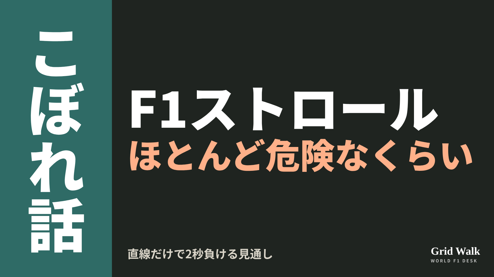<button class="cp dl" data-img="img/x_stroll-underpowered-20261120.png" data-name="x_stroll-underpowered-20261120.png">ダウンロード</button></li>
<li class="st"><div class="hd"><b>① noteをシェアするときの文</b></div><div class="bx" id="p7x0">FIAの会見で、アストンマーティンのストロールが、パワーの足りなさは「ほとんど危険なくらい」と話しました。今週末は直線だけで2秒くらい負けそうだといいます。今季のリタイアは13回。noteにまとめました #F1jp #ストロール</div><button class="cp" data-plain="p7x0">コピー</button></li>
<li class="st"><div class="hd"><b>② ①への返信</b></div><div class="bx" id="p7x1">ほかの海外記事も読みたい方は、F1 Grid Walkへ。
https://f1gridwalk.github.io/lens/stroll-underpowered-20261120/?utm_source=x&amp;utm_campaign=stroll-underpowered-20261120</div><button class="cp" data-plain="p7x1">コピー</button></li>
<li class="st"><div class="hd"><b>③ ②への返信</b></div><div class="bx" id="p7x2">毎日の海外F1ニュースは、日本語でこちらにまとめています。
https://f1gridwalk.github.io/</div><button class="cp" data-plain="p7x2">コピー</button></li>
</ol></section><section class="part" id="p8"><h2><span class="tag">OFF GRID</span>ラッセル、レッドブルの進歩は「かなり驚き」　残り3戦は「チャンス」</h2><p class="sub">サイトに公開：10:31</p><ol class="steps">
<li class="st im"><div class="hd"><span class="no">1</span><b>見出し画像</b><em>画像</em></div>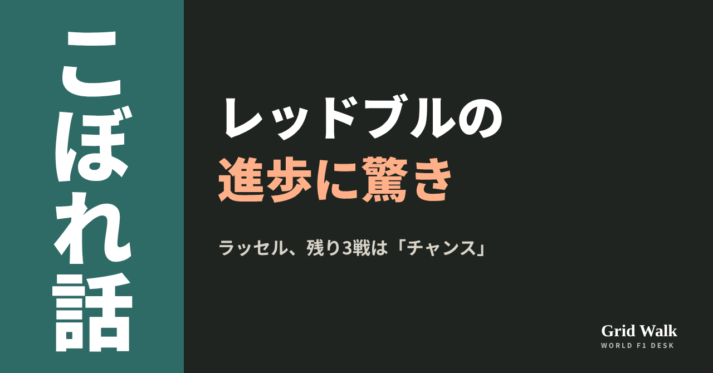<button class="cp dl" data-img="img/russell-redbull-progress-20261120.png" data-name="russell-redbull-progress-20261120_見出し画像.png">ダウンロード</button></li>
<li class="st"><div class="hd"><span class="no">2</span><b>タイトル</b></div><div class="bx" id="p8t">ラッセル、レッドブルの進歩は「かなり驚き」　残り3戦は「チャンス」</div><button class="cp" data-plain="p8t">タイトルをコピー</button></li>
<li class="st"><div class="hd"><span class="no">3</span><b>本文</b></div><div class="bx tall" id="p8r"><p>ラスベガスGPを前に、メルセデスのジョージ・ラッセルが、今季のレッドブルの進歩に驚きを口にしました。オランダのRacingNews365が11月19日に伝えたもので、同サイトを含むメディアに話しました。</p><p>元の記事の要約と、レッドブルのメキース代表が語った差の縮め方はサイトで → <a href="https://f1gridwalk.github.io/lens/russell-redbull-progress-20261120/?utm_source=note&amp;utm_campaign=russell-redbull-progress-20261120">https://f1gridwalk.github.io/lens/russell-redbull-progress-20261120/?utm_source=note&amp;utm_campaign=russell-redbull-progress-20261120</a></p><p>今季の残りは、ラスベガス、カタール、アブダビの3戦です（F1公式）。この3戦をどう見るかと聞かれたラッセルは、まず冗談めかして、こう答えました。</p><blockquote><p>「3勝できたら、たぶん、かなり満足できるだろうね」（ラッセル、RacingNews365／オランダ）</p></blockquote><h2>苦手なのは、タイヤが熱くなるコース</h2><p>F1公式によると、第20戦サンパウロGPを終えて、ラッセルは262点でドライバーズ3位。勝利はオーストラリア、オーストリア、アゼルバイジャンの3つです。RacingNews365は、チームメイトのアンドレア・キミ・アントネッリが王座を決め、ラッセルは不運にも見舞われて、望んでいた年にはならなかったと書いています。</p><blockquote><p>「正直に言うと、この最後の3戦はチャンスだとも見ている。まずは、ただ楽しむために」（ラッセル、RacingNews365／オランダ）</p></blockquote><p>ラッセルは、いろいろ試してみる機会でもあると続けました。そして、今季どこで苦しんだかを振り返ると、残る3つのコースは自分の弱点をさらけ出す場所ではないと思う、と話しました。</p><blockquote><p>「前にも言ったように、たいていは、タイヤがオーバーヒートするサーキットで苦しんでいる」（ラッセル、RacingNews365／オランダ）</p></blockquote><p>路面が古く、タイヤの減りが大きいコースも同じだといいます。反対に、バクーやモントリオールのように涼しく、タイヤがちょうどいい温度の範囲（ https://f1gridwalk.github.io/deep/rules/operating-window/ ）に入るコースでは、たいてい調子がいいといいます。9月のアゼルバイジャンGPで勝ったのも、そのバクーでした（F1公式）。</p><blockquote><p>「だから、これが自分の弱点で、そこを直したい、とは言いにくい」（同）</p></blockquote><h2>レッドブルは開幕15戦で勝ちなし</h2><p>RacingNews365は、ラッセルが、扱いの難しかったアップデートをメルセデスが機能させたことを喜んでいると書いています。</p><blockquote><p>「チームの立場では、とにかく、すごく興味がある」「この新しいパッケージで、車をもっといい作動領域に入れられたと、本気で思っている。ほかと比べて自分たちがどこにいるのか、すごく興味がある」（同）</p></blockquote><p>作動領域は、車が性能をきちんと出せる条件の幅のことです（ https://f1gridwalk.github.io/deep/rules/car-operating-window/ ）。ほかとの比べ方が気になる理由として、ラッセルが挙げたのがレッドブルでした。</p><blockquote><p>「今季のレッドブルの進歩は、かなり驚きだから」「それに、ランド・ノリスのマクラーレンも、いくつかのレースで、もちろんとても強かった」（同）</p></blockquote><p>F1公式の結果では、レッドブルは開幕から15戦、一度も勝てませんでした。そのあとの5戦で、マックス・フェルスタッペンが第16戦バーレーンGP（マレーシア開催）、第17戦シンガポールGP、第19戦メキシコシティGPと3勝。同じ5戦のメルセデスの勝利は、第18戦アメリカGPのアントネッリの1つです。フェルスタッペンは279点で2位で、ラッセルとは17点差。4位のルイス・ハミルトンとは1点差です。レッドブル側から見た差の縮め方は、メキース代表の話 https://f1gridwalk.github.io/lens/mekies-red-bull-gap-20261116/ で。</p><p>編集部としては、残り3戦はラッセルにとって、順位争いの場であると同時に、自分の見立てを確かめる場にもなると見ています。弱点が出にくいコースだと本人が話したうえで、メルセデスの新しいパッケージが、勢いのあるレッドブルとどこまで戦えるかが見えるからです。</p><p><strong>ラッセルは残り3戦で、2位のフェルスタッペンに追いつけると思いますか？</strong></p><p>━━━━━━━━━━</p><p><strong>F1 Grid Walk では、世界のF1ニュースを毎日日本語でまとめています。</strong></p><p>海外の記事の要約を、毎日載せています。</p><p><a href="https://f1gridwalk.github.io/">https://f1gridwalk.github.io/</a></p><p>ほかの海外記事も読みたい方は、F1 Grid Walkへ。</p><p><a href="https://f1gridwalk.github.io/lens/russell-redbull-progress-20261120/">https://f1gridwalk.github.io/lens/russell-redbull-progress-20261120/</a></p><p>━━━━━━━━━━</p><p><a href="https://racingnews365.nl/russell-zeer-verrast-door-stormachtige-progressie-red-bull">出典：RacingNews365（オランダ）</a></p><p><a href="https://www.formula1.com/en/results/2026/races">出典：F1公式サイト（イギリス）</a></p><p><a href="https://www.formula1.com/en/results/2026/drivers">出典：F1公式サイト（イギリス）</a></p></div><button class="cp" data-rich="p8r">本文をコピー</button></li>
<li class="st"><div class="hd"><span class="no">4</span><b>ハッシュタグ</b></div><div class="bx" id="p8h">#F1 #F1jp #ラッセル #メルセデス #レッドブル #フェルスタッペン #ラスベガスGP #F1こぼれ話 #OFFGRID</div><button class="cp" data-plain="p8h">タグをコピー</button></li>
</ol><h3 class="xh">X</h3><ol class="steps">
<li class="st im"><div class="hd"><b>X用の画像</b><em>画像</em></div>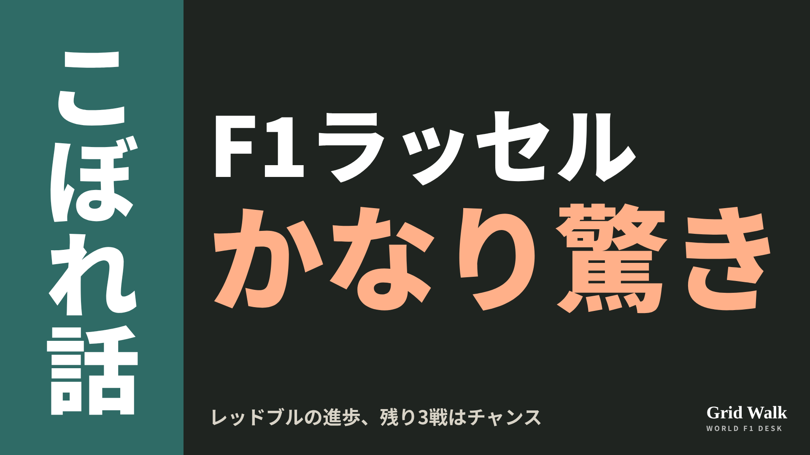<button class="cp dl" data-img="img/x_russell-redbull-progress-20261120.png" data-name="x_russell-redbull-progress-20261120.png">ダウンロード</button></li>
<li class="st"><div class="hd"><b>① noteをシェアするときの文</b></div><div class="bx" id="p8x0">開幕15戦で勝ちのなかったレッドブルが、直近5戦で3勝。メルセデスのラッセルは、その進歩が「かなり驚き」と話し、残り3戦を「チャンス」と見ています。noteにまとめました #F1jp #ラッセル #メルセデス</div><button class="cp" data-plain="p8x0">コピー</button></li>
<li class="st"><div class="hd"><b>② ①への返信</b></div><div class="bx" id="p8x1">ほかの海外記事も読みたい方は、F1 Grid Walkへ。
https://f1gridwalk.github.io/lens/russell-redbull-progress-20261120/?utm_source=x&amp;utm_campaign=russell-redbull-progress-20261120</div><button class="cp" data-plain="p8x1">コピー</button></li>
<li class="st"><div class="hd"><b>③ ②への返信</b></div><div class="bx" id="p8x2">毎日の海外F1ニュースは、日本語でこちらにまとめています。
https://f1gridwalk.github.io/</div><button class="cp" data-plain="p8x2">コピー</button></li>
</ol></section></main><script>
function done(b,msg){const t=b.dataset.t||b.textContent;b.dataset.t=t;b.classList.add('ok');b.textContent=msg||'コピーしました';setTimeout(()=>{b.classList.remove('ok');b.textContent=t},2000)}
function selectEl(el){const r=document.createRange();r.selectNodeContents(el);const s=getSelection();s.removeAllRanges();s.addRange(r)}
async function rich(el,b){
  try{await navigator.clipboard.write([new ClipboardItem({'text/html':new Blob([el.innerHTML],{type:'text/html'}),'text/plain':new Blob([el.innerText],{type:'text/plain'})})]);done(b);return}catch(e){}
  selectEl(el);let ok=false;try{ok=document.execCommand('copy')}catch(e){}
  if(ok){getSelection().removeAllRanges();done(b)}else{done(b,'選択しました。コピーしてください')}}
async function plain(el,b){
  try{await navigator.clipboard.writeText(el.innerText);done(b);return}catch(e){}
  selectEl(el);let ok=false;try{ok=document.execCommand('copy')}catch(e){}
  if(ok){getSelection().removeAllRanges();done(b)}else{done(b,'選択しました。コピーしてください')}}
let dlns=null;(async()=>{try{dlns=await window.claude?.use?.("downloads")}catch(e){dlns=null}})();
async function img(src,b){
  b.dataset.t=b.dataset.t||b.textContent;
  if(!dlns){try{dlns=await window.claude?.use?.("downloads")}catch(e){}}
  if(!dlns){b.textContent='ダウンロードできませんでした';setTimeout(()=>{b.textContent=b.dataset.t},3500);return}
  try{const blob=await fetch(src).then(r=>r.blob());b.textContent='保存の確認を開いています…';
    await dlns.save({filename:b.dataset.name,data:blob});done(b,'ダウンロードしました')}
  catch(e){const c=e&&e.code;b.textContent=c==='declined'?'キャンセルしました':c==='rate_limited'?'少し待ってからもう一度押してください':'ダウンロードできませんでした';setTimeout(()=>{b.textContent=b.dataset.t},3500)}}
document.querySelectorAll('.cp').forEach(b=>b.addEventListener('click',()=>{
  if(b.dataset.rich)rich(document.getElementById(b.dataset.rich),b);
  else if(b.dataset.plain)plain(document.getElementById(b.dataset.plain),b);
  else img(b.dataset.img,b)}));
</script>